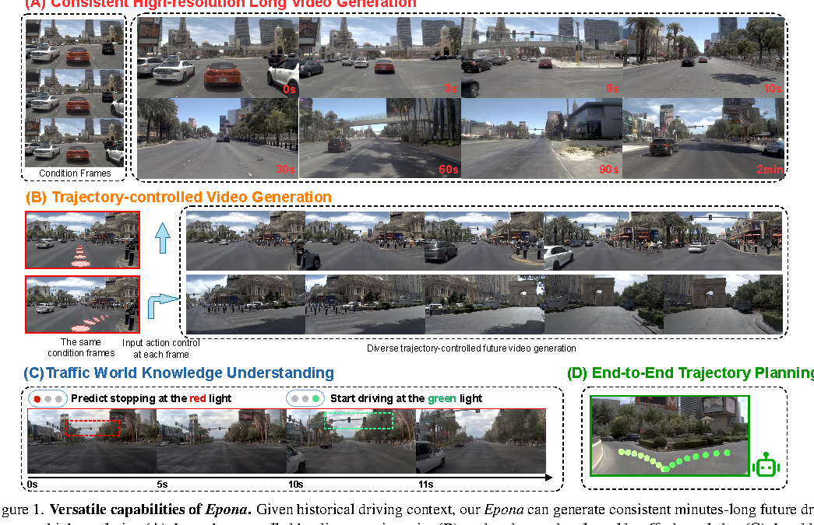
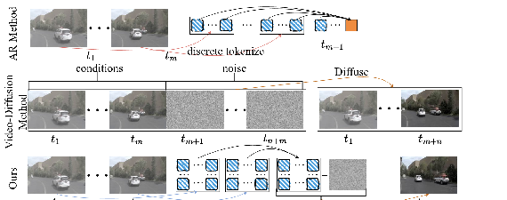
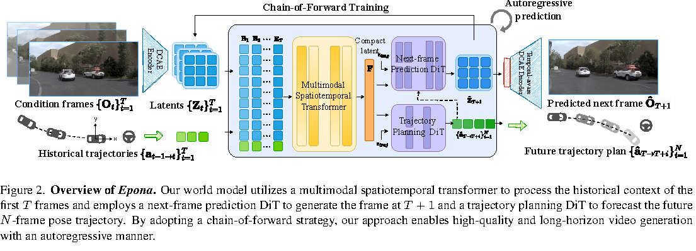
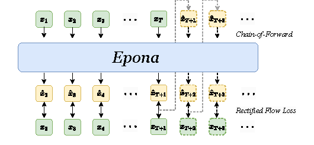

一句话总结
Epona 把 driving world model 从“固定长度视频块生成”改成“动作条件下的连续 latent 下一帧预测”， 所以它既能自回归生成更长未来，也能输出轨迹作为实时 motion planner。
Figure 1：Epona 展示的四种能力

- A. Consistent high-resolution long video generation：给历史驾驶帧后，生成从 0s 到 2min 的未来驾驶场景。它想证明自己不是只能生成几秒短片。
- B. Trajectory-controlled video generation：相同 condition frames 下，输入不同轨迹控制，未来视频会对应直行或转弯等不同运动结果。
- C. Traffic world knowledge understanding：模型需要理解红灯停、绿灯走这类交通语义，而不是只续写道路纹理。
- D. End-to-end trajectory planning：模型不只生成画面，还能预测未来轨迹，因此可以服务自动驾驶规划。
3.2：为什么要重新定义 world model

论文把已有方法分成两类：GPT-style autoregressive 方法和 video diffusion 方法。前者时间长度灵活， 但要把图像离散成 token，容易损失高频细节；后者画质强，但通常一次生成固定长度的未来视频， 不天然支持 variable-length long-range prediction。
离散 token 自回归
优点是可以一直 next-token；缺点是图像被量化，细节和空间相关性会被削弱。
固定窗口联合生成
优点是视觉质量高；缺点是通常生成固定 n 帧，长时 rollout 要反复调用。
连续 latent 自回归
一帧一帧往后预测，但预测对象是连续 latent，不是离散图像 token。
因果时间建模
把未来建模成局部条件分布，更贴近驾驶场景中“当前动作导致下一刻状态”的因果链。
Video diffusion:
p({O_{T+i}}_{i=1}^n, {O_t, a_t}_{t=1}^T)
Epona:
p(O_{T+1} | {O_t, a_{t-1→t}}_{t=1}^T, a_{T→T+1})3.3：Epona 总体结构

Epona 的输入是历史 condition frames 和 historical trajectories。图像先经 DCAE Encoder 得到连续 latent
{Z_t}，历史轨迹用 a_{t1→t2}=(Δθ, Δx, Δy) 表示。
MST 把视觉 latent 和动作序列融合成 compact latent F。
历史图像 {O_t} + 历史轨迹 {a_{t-1→t}}
↓
DCAE Encoder + MST
↓
compact latent F
↙ ↘
TrajDiT VisDiT
未来轨迹 动作条件下一帧图像 latent这个模块化设计很有意思：做 controllable simulation 时主要用 MST + VisDiT； 做实时规划时可以用 MST + TrajDiT，因此它试图桥接 driving world model 和 end-to-end planner。
MST：历史上下文压缩器
MST 的全称是 Multimodal Spatiotemporal Transformer。它输入视觉 latent
Z ∈ R^{B×T×L×C} 和动作 a ∈ R^{B×T×3}，投影到 embedding space 后沿空间维拼接：
E ∈ R^{B×T×(L+3)×D}
然后它交替使用两类 attention：causal temporal attention 负责“历史如何沿时间传递”，
multimodal spatial attention 负责“每一帧内部视觉 latent 和动作如何融合”。
最后取最后一帧 embedding 得到 F，作为后续 TrajDiT 与 VisDiT 的条件。
TrajDiT 与 VisDiT
TrajDiT：轨迹规划扩散模型
TrajDiT 用一个小型 diffusion transformer 生成未来轨迹。训练时给真实未来轨迹加噪， 模型学习 rectified flow velocity：
L_traj = E[ || v_traj(a_t, t) - (a - ε) ||² ]推理时从高斯噪声出发，在 compact latent F 条件下 denoise 出未来 trajectory plan。
VisDiT：动作条件下一帧生成
VisDiT 生成下一帧图像 latent Z_{T+1}，并额外接收动作控制
a_{T→T+1}。所以同一历史场景下，给不同未来动作，可以生成不同未来画面。
L = L_traj + L_vis3.4 Chain-of-Forward Training


普通 teacher forcing 训练时，模型看到的历史上下文都是真实帧；但推理时，模型需要用自己生成的帧继续生成更远未来。 这会带来 train-test domain gap，进而导致 autoregressive drift。
Chain-of-Forward 的做法是：训练过程中周期性执行多次 forward，把 self-predicted frames/latents 用作后续条件。 这样模型在训练时就见过“有一点预测误差的历史”，从而更适应长时 rollout。
为了效率，作者没有完整跑多步 diffusion sampling，而是用 rectified flow 的 velocity 一步估计 clean latent：
x̂_(0) = x_(t) + t v_Θ(x_(t), t)Chain-of-Forward 不是消灭误差累计，而是降低 teacher forcing 与 autoregressive sampling 的分布差， 让模型对自身预测误差更鲁棒。
3.5 Temporal-aware DCAE Decoder

Epona 使用 DCAE 编码图像。DCAE 相比普通 autoencoder 压缩更强，可以把 latent token 数减少约 16 倍， 从而节省显存并支持更长历史上下文。
但 DCAE 原本是 image autoencoder。逐帧 decode 视频时，每一帧独立恢复，缺少跨帧信息交互， 所以容易出现 flickering，也就是画面闪烁、纹理抖动、边缘不稳定。
作者的解决方式是在 DCAE decoder 前添加 spatiotemporal self-attention layers，同时保持 encoder 固定。 这让多帧 latent 在解码前互相对齐，尽量提升视频的 temporal consistency。
你问到的几个关键问题
1. “不能很好支持 variable-length long-range prediction，容易漂”是在说误差累计吗？
是的，核心就是误差累计，但不只是数值误差。它还包括视觉质量下降、物体位置漂移、 车道线变形、交通灯语义不稳定、场景突然跳变等。对于自动驾驶，视觉漂移会进一步影响轨迹规划。
2. Epona 是怎么解决这个问题的？
它用了三层缓解：第一，把固定长度视频生成改成逐帧 next-frame prediction； 第二，在 continuous latent 里用 diffusion 预测，减少离散 token 量化失真； 第三，用 Chain-of-Forward 训练，让模型学会处理自己生成的、不完美的历史上下文。
3. 这样不也会误差累计吗？
会。只要是 autoregressive，就仍有误差累计风险。Epona 的贡献不是理论上消灭误差， 而是让误差累计更慢、更可控：latent-space prediction 减少像素级噪声传播， chain-of-forward 降低训练和推理的分布差，Temporal-aware DCAE 减少逐帧解码带来的闪烁。
对 AD World Model 的启发
- 长时 world model 不一定要一次性生成固定长度视频，可以转成 sequential local prediction。
- 视频生成和轨迹规划可以共享 temporal latent，但用不同 DiT 分支优化。
- 训练时必须处理 exposure bias，否则长时 rollout 很容易短期好看、长期漂移。
- 写论文时，“解决误差累计”要谨慎，最好表述成 “mitigate autoregressive drift”。